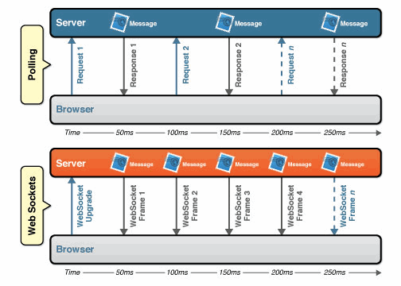
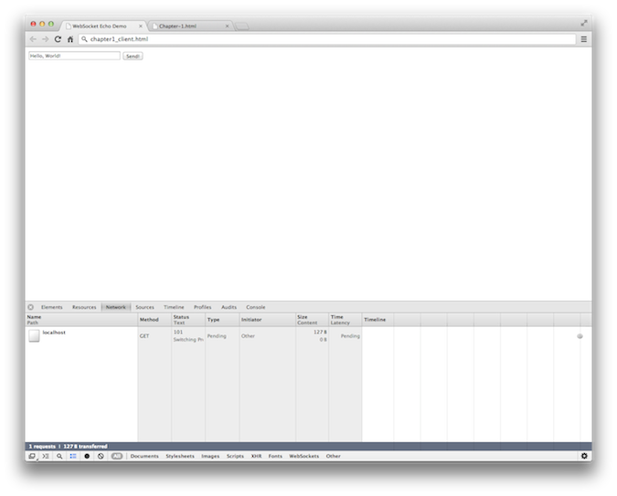

AngularJS and Flask sitting in a tree
About Me
About Me
14 Years in Business
Software Consultants
International Speakers
Training
App Developer (Objective-C, Java, JavaScript, Python)
To our success!
History of "push" technology
Adobe Flash® Socket
HTTP Polling
AJAX long polling & multipart-streaming
Forever Frame
JSONP Polling
HTTP Polling
Browser sends HTTP requests at regular intervals
Refreshes to the client are noisy
Real-time data is not deterministic
HTTP Long Polling
Browser sends HTTP requests to server and request is kept open
Could throttle out of control
Streaming
Browser sends complete request but server keeps open
Response updated intermittently when new data arrives
Firewalls and proxy servers may buffer causing latency
HTTPS can be used but introduces additional resource cost
HTTP / REST call
- Use case A: 1,000 clients polling every second: Network throughput is (871 x 1,000) = 871,000 bytes = 6,968,000 bits per second (6.6 Mbps)
- Use case B: 10,000 clients polling every second: Network throughput is (871 x 10,000) = 8,710,000 bytes = 69,680,000 bits per second (66 Mbps)
- Use case C: 100,000 clients polling every 1 second: Network throughput is (871 x 100,000) = 87,100,000 bytes = 696,800,000 bits per second (665 Mbps)
Source: http://www.websocket.org/quantum.html
WebSocket call
- Use case A: 1,000 clients receive 1 message per second: Network throughput is (2 x 1,000) = 2,000 bytes = 16,000 bits per second (0.015 Mbps)
- Use case B: 10,000 clients receive 1 message per second: Network throughput is (2 x 10,000) = 20,000 bytes = 160,000 bits per second (0.153 Mbps)
- Use case C: 100,000 clients receive 1 message per second: Network throughput is (2 x 100,000) = 200,000 bytes = 1,600,000 bits per second (1.526 Mbps)
Source: http://www.websocket.org/quantum.html
Comparison Graph

Source: http://www.websocket.org/quantum.html
Latency Comparison
Source: http://www.websocket.org/quantum.html
HTML5 WebSocket gives you a full-duplex communications channel that operates over HTTP through a single socket.
Standardizing on NodeJS
Single language
Built in support for Websockets
Client is JavaScript
Installing NodeJS
On Windows: http://nodejs.org/dist/latest/node.exe
On Mac OS X: http://nodejs.org/dist/latest/
On Linux: https://github.com/joyent/node/wiki/Installing-Node.js-via-package-manager
Hello, World
Fun fact:
The initial incarnation of everyones first application in a new language / technology was first written in Kernighan's 1972 A Tutorial Introduction to the Language B, and it was used to illustrate external variables in the language.
Hello, World
Let's take a look at the server
var WebSocketServer = require('ws').Server,
wss = new WebSocketServer({port: 8181});
wss.on('connection', function(ws) {
ws.on('message', function(message) {
console.log(message);
});
});
Uses ws nodejs library
HTML5
And the client HTML
<!DOCTYPE html>
<html>
<head>
<title>WebSocket Echo Demo</title>
<script>
var ws = new WebSocket("ws://localhost:8181");
ws.onopen = function(e) {
console.log('Connection to server opened');
}
function sendMessage() {
ws.send(document.getElementById('message').value);
}
</script>
</head>
<body>
<form onsubmit="sendMessage(); return false;">
<input type="text" name="message" style="width: 200px;" id="message"
placeholder="Type text to echo in here" value="" autofocus/>
<input type="button" value="Send!"
onclick="sendMessage();" />
</form>
</body>
</html>
Developer Tools
Developer Tools
Request Headers
GET ws://localhost:8181/ HTTP/1.1
Pragma: no-cache
Origin: null
Host: localhost:8181
Sec-WebSocket-Key: qalODNsUoRp+2K9FJty55Q==
User-Agent: Mozilla/5.0 (Macintosh; Intel Mac OS X 10_8_3)...
Upgrade: websocket
Sec-WebSocket-Extensions: x-webkit-deflate-frame
Cache-Control: no-cache
Connection: Upgrade
Sec-WebSocket-Version: 13
Developer Tools
Response Headers
HTTP/1.1 101 Switching Protocols
Connection: Upgrade
Sec-WebSocket-Accept: nambQ7W9imtAIYpzsw4hNNuGD58=
Upgrade: websocket
Demo
WebSocket API
Intializing
var ws = new WebSocket("ws://localhost:8181");
WebSocket Constructor
| Parameter Name | Description |
|---|---|
| URL | URL as ws:// or wss:// (if using TLS) |
| protocol (optional) | parameter specifying sub-protocols that may be used as Array or single string |
WebSocket Protocol
Registered Protocols
In the spec for WebSocket RFC 6455, section 11.5 defines the Subprotocol Name Registry for IANA maintained registrations.Open Protocols
In addition, you may use open protocols that are unregistered such as Extensible Messaging and Presence Protocol (XMPP) or Simple Text Oriented Message Protocol (STOMP), and various others.Custom
You are free to design any protocol you like, as long as your server and client both support it. Recommended is to use names that contain the ASCII version of the domain name of the subprotocol’s originator. "chat.acme.com"WebSocket Events - Open
ws.onopen = function(e) {
console.log("Connection established");
};
WebSocket Events - Message
ws.onmessage = function(e) {
console.log("Message received: " + e.data);
};
WebSocket Events - Error
ws.onerror = function(e) {
console.log("WebSocket failure, error", e);
handleErrors(e);
};
WebSocket Events - Close
ws.onclose = function(e) {
console.log("WebSocket connection closed", e);
}
WebSocket Method - Send
function processEvent(e) {
if(ws.readyState === WebSocket.OPEN) {
// Socket open, send!
ws.send(e);
} else {
// Show an error, queue it for sending later, etc
}
}readyState can be interrogated to ensure open connection before sending
WebSocket.readyState
| Name | Value | Description |
|---|---|---|
| WebSocket.CONNECTING | 0 | Connection not yet established |
| WebSocket.OPEN | 1 | Connection is established and ready for messages |
| WebSocket.CLOSING | 2 | Connection is closing handshake |
| WebSocket.CLOSED | 3 | Connection has been closed or could not be opened |
WebSocket.bufferedAmount
The readonly attribute bufferedAmount represents the number of bytes of UTF-8 text that have been queued using send() method.
WebSocket.protocol
Optional argument allows you to request via the client one or many sub-protocols.
Server ultimately decides the protocol to choose during handshake
WebSocket Method - Close
ws.close(1000, "Goodbye, World!");
Optional offer code and reason
Checking browser support
if (window.WebSocket) {
console.log("WebSocket: supported");
// ... code here for doing WebSocket stuff
} else {
console.log("WebSocket: unsupported");
// ... fallback mode, or error back to user
}
Demo
Browser Support
| Browser | Minimum Version |
|---|---|
| Firefox | 6.0 |
| Chrome | 14.0+ |
| Safari | 6.0+ |
| Opera | 12.1+ |
| iOS Safari | 6.0+ |
| Android | 4.4+ |
Internet Explorer 10
Socket.IO
Socket.IO wraps a JavaScript API to allow for different transport mechanisms based on browser support. It provides heartbeats, channels, disconnection notifications and various other things not provided by the WebSocket API.
SockJS
SockJSa> is a browser JavaScript library that provides a WebSocket-like object. SockJS gives you a coherent, cross-browser, Javascript API which creates a low latency, full duplex, cross-domain communication channel between the browser and the web server.
web-socket-js
web-socket-js is a WebSocket implementation powered by Flash.
Alternatives to Websockets
And many more...
Helpful Links
New WebSocket book

Q & A
Andrew Lombardi / @kinabalu
kinabalu @ irc://irc.freenode.net
#javascript